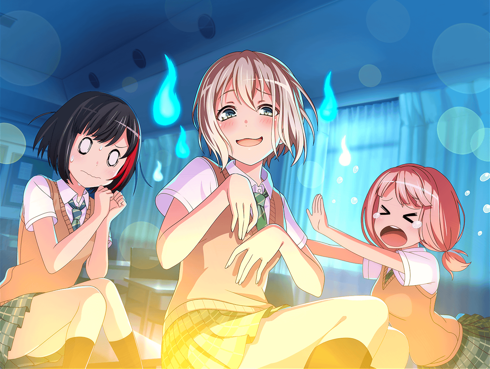

ひまり
……よしっ！
宿題、全部終わったあー！！！
モカ
ホントに全部終わったー？ また『忘れ物』してなーい？
ひまり
終わったよーだ！
『忘れ物』の話はもうやめてよ〜
つぐみ
あの日は本当に大変だったね〜……
ひまり
あの日、連絡もなしに帰りが遅くなっちゃったから、
家に帰ったらお父さんにすっごく怒られちゃったんだ……
モカ
さいなーん。帰り道でも、散々蘭に怒られたのにね
ひまり
うう……でも、みんなあの日は本当にありがとう。
夜遅くに忘れ物を取りに学校に戻るなんてこと、
もう、二度としないようにします……
モカ
忘れ物はアレだけどさ、
肝試しをしたのは楽しかったよねえ〜
つぐみ
うう……私はもうこりごりだな……
ひまり
私も……はあ……怖かった〜。
思い出すだけでゾッとするよ〜
モカ
そうかなー？ みんな、怖いのそんなに苦手なんだね？
ひまり
苦手！ おばけが世界一怖い！ 無理〜！
つぐみ
私も怖いのは苦手かな……あの時はしっかりしなきゃって
がんばってたけど……
モカ
世界一怖いなんて、ひーちゃんは大げさだなあ〜。
ひーちゃんはすぐ話盛るからさ〜
ひまり
話を盛るのは……うん、ごめん。
でも、おばけはやっぱり怖いよ〜！
目に見えないってだけで無理！
つぐみ
確かに、目に見えないとか、自分の頭では理解しきれないものって
怖いよね……
モカ
ふーん、そういうものかあ。
あたしはそういうとこがワクワクするけどな〜
つぐみ
モカちゃんって、本当に怖いものなさそうだね……
ひまり
逆にさ、モカの怖いものってなに？
モカ
そりゃあ、あたしにだって怖いものはあるよ〜例えば〜
……ん〜……なんだろう？
つぐみ
先生に怒られるとか！
モカ
まあ、嫌だけど、モカちゃんは優秀だから
怒られたことないんだな〜これが
ひまり
蘭と屋上でサボった時、めちゃくちゃ怒られてなかった？
モカ
あー、そんなこともあったね〜
ひまり
そんなこと、って……モカにとってはその程度の話ってことかあ
つぐみ
巴ちゃんに怒鳴られる！ ……のは？
モカ
なんでさっきから怒られるシリーズばっかりなの〜？
ひまり
確かに巴は怒ると結構コワイ……
モカ
けどトモちんのおこは、愛あってのおこじゃん？
つぐみ
モカちゃんの言うとおりだね。
さっきの発言、反省しなくちゃ……
ひまり
けど、コワイのはホントだから……
つぐみ
モカちゃんの怖いもの、なんだろう〜……
辛いものが苦手だったよね？ でも、怖くはないかあ
モカ
怖くはないねー
ひまり
パンのない世界！
モカ
怖くはないねえー
ひまり
ジェットコースター！
モカ
すきー
ひまり
注射！
モカ
へいきー
つぐみ
宇宙！
モカ
……どゆこと？
ひまり
ん〜……やっぱり、モカって怖いものないんじゃないの？
これだけ言ってもないなんて
モカ
そうかも。……ううん、あたしは……みんながいれば、
怖いものだって、怖くなくなっちゃうんだよ……っ！
モカ
みんな、ラブ〜♡
ひまり
もぉー、またテキトーなこと言って〜！
モカ
ふーん、じゃあひーちゃんはこのあいだ参考書取りにいったのも、
みんながいなくてもヘーキだったわけ〜？
ひまり
うう……それは無理です……
モカ
ほらね〜。みんなのラブがあれば、
怖いものをナシにできちゃうわけよ〜
つぐみ
モカちゃん、すごすぎる……！
ひまり
も〜。モカにごまかされちゃった。
いつものことだけど〜
モカ
……半分ホントのことなんだけどな〜？
つぐみ
え？ 何か言った？
モカ
ううん、ひとりごとー。ラブ〜♡
ひまり
んーっ！ 宿題も終わったし、このあと今度こそみんなで
遊びにいかない？
つぐみ
うんっ、そうしよう！
ひまり
なんか、やっと夏休みがはじまった気がするなあ
モカ
あと１週間しかないよ〜？
ひまり
それでもいーのっ！
つぐみ
蘭ちゃんと巴ちゃんにも声かけてみるね
モカ
おっけ〜。ラブ〜♡
ひまり
もう、それ何？
ラブ〜♡って
モカ
ラブはラブだよ〜。ひーちゃん、わかってないなあ
ひまり
ふふっ、ヘンなの〜？